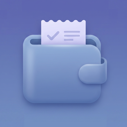

Last updated: July 15, 2026
This privacy policy applies to the mobile application “Expense Tracker: Budget Log” provided by the developer.
Expense Tracker: Budget Log does not require account registration and does not ask users to enter personal information for account creation.
The app allows users to record expenses by entering amounts, categories, dates, and optional notes. These values are used only for app functionality within the app and are not sent to the developer.
The app does not collect, store, or share expense amounts, category names, notes, spending history, monthly totals, category summaries, or CSV export contents on external servers operated by the developer.
Expense Tracker: Budget Log stores app data locally on the user’s device, including expense entries, built-in category selections, custom categories, dates, amounts, and optional notes.
This local data is used to display, edit, organize, and summarize expenses, calculate monthly totals and daily averages, and show category-based spending information. The developer does not receive or store this data on external servers.
The app may also store simple app settings locally on the user’s device, such as custom category preferences and other settings required for app functionality.
Expense Tracker: Budget Log allows users to manually record and manage everyday expenses.
Expense amounts, categories, dates, notes, monthly totals, daily averages, top categories, and related spending history are stored locally on the user’s device.
The developer does not automatically receive, access, review, or analyze the financial information entered by users.
Pro users may create custom expense categories by entering a category name and selecting an icon and color.
Custom category information is stored locally on the user’s device and is not sent to the developer.
If a custom category is deleted, existing expenses assigned to that category may be moved to the built-in Other category.
Pro users may export saved expense data as a CSV file.
The CSV file may include expense dates, categories, amounts, currency codes, and optional notes.
CSV files are created locally on the user’s device and are shared only when the user chooses to use the iOS share sheet or another available sharing option.
The developer does not automatically receive, upload, or store exported CSV files.
Expense Tracker: Budget Log offers optional auto-renewable subscriptions for Pro features, such as unlimited expense entries, custom categories, CSV export, and removal of banner advertisements.
In-app purchases and subscriptions are processed by Apple through the App Store. The developer does not receive or store users’ payment card information.
Subscription status and purchase entitlements are verified through Apple’s StoreKit services.
Expense Tracker: Budget Log may display banner ads using Google AdMob for users who do not have an active Pro subscription.
Third-party advertising services may collect and use certain information, such as device identifiers, advertising identifiers, approximate location, diagnostic information, and ad interaction data, in accordance with their own privacy policies.
Users may remove banner advertisements by subscribing to Pro.
Expense Tracker: Budget Log uses the following third-party services:
These services may process data according to their own privacy policies and platform rules.
Expense Tracker: Budget Log is a simple personal expense-recording and spending-summary tool.
The app does not provide financial, investment, tax, accounting, legal, banking, credit, or professional budgeting advice.
The app does not connect to bank accounts, credit cards, payment services, or financial institutions.
Users are responsible for reviewing the accuracy of the information they enter and for making their own financial decisions.
Expense data and custom categories remain stored locally on the user’s device until the user edits or deletes them, clears app data, or removes the app.
Deleting the app may remove locally stored expense data unless the operating system or another user-controlled backup method preserves it.
The developer cannot recover locally stored expense data because the developer does not receive or store that data on external servers.
Expense Tracker: Budget Log is not specifically directed at children under the age of 13.
The app does not knowingly collect personal information from children.
If you believe that a child has provided personal information through the app, please contact the developer so that appropriate action can be taken.
This privacy policy may be updated from time to time.
Any significant changes may be communicated through the app, the App Store listing, or the developer’s website.
If you have any questions about this privacy policy, please contact us: